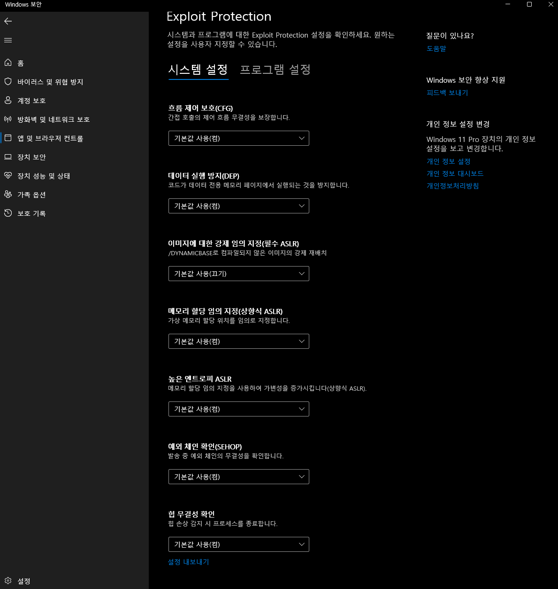
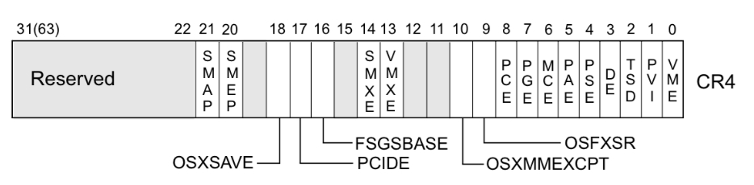
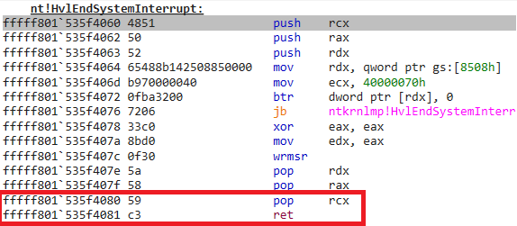
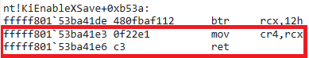
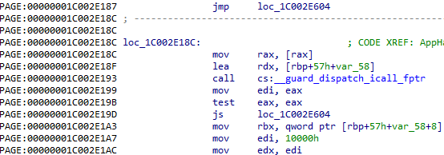
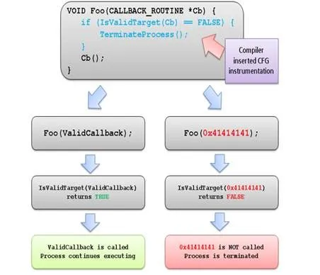

[Research] Bypassing Windows Kernel Mitigations: Part1 - Overview (Ko)
Bypassing Windows Kernel Mitigations: Part1 - Overview ← Now
Bypassing Windows Kernel Mitigations: Part2 - CVE-2024-21338
안녕하세요, L0ch입니다. 드디어.. 3년 만에 연구글로 돌아왔습니다! 사실 원래 1년 전에 연구글을 쓰려 했지만 졸업과 취업 양각에서 멘탈이 탈탈 털리고 있었기 때문에 흐지부지됐었던 기억이 있네요 ㅎㅎ.. 그래서 쓰다 만 초안 일부를 가져와봤습니다.
1년 전 연구글 복귀각을 보던 더미데이터…
졸업준비를 소홀히 했던 업보를 어찌어찌 청산하고 취업도 해서 이제 직장인 2년차가 됐는데, 앞으로 틈틈이 올려보도록 하겠습니다 :)
서론
2021년에 공대오빠가 알려주는 Windows Driver 시리즈를 업로드했는데요… 제목 진짜 뭔 생각하고 지은건지 과거의 제가 이해가 가질 않네요..
너 그 시리즈 제목으로 3년 넘게 놀림받는다고!!!!
그래도 제 글을 보면서 Windows 커널을 공부하셨다는 분도 가끔씩 만나고 나름 뿌듯하긴 합니다 제목만 빼고요
아무튼, 이전 시리즈를 간단하게 요약해보면 AMD Ryzen Master 드라이버의 MmMapIoSpace 함수 호출 시 검증 부족으로 발생하는 Arbitrary Physical Address R/W를 이용한 권한 상승 취약점이었습니다. 자세한 내용이 궁금하신 분들은 [Research] 공대오빠가 알려주는 Windows Driver 를 참고하세요!
사실 저번 시리즈는 MmMapIoSpace 함수의 잘못된 사용으로 발생하는 물리 메모리 RW라서 mitigation을 우회할 필요도 없이 Token이 있는 매핑된 메모리 페이지 찾아 페이지를 몽땅 덮어써버리는 방식이 가능했죠..! 그래서 좀 더 일반적인 커널 Exploit에서 사용하는 mitigation 우회 기법을 정리해보겠습니다.
Windows Kernel Mitigations
Windows엔 정말 많은 mitigation들이 있고 최근에도 새롭게 등장하면서 취약점 악용은 점점 어려워지고 있죠 더 추가되면 어떻게 먹고사냐

Windows 보안 앱에서 적용된 Exploit Protection을 간략하게 확인할 수 있습니다.
mitigation들 중 Windows 커널에 적용되는, 특히 memory corruption으로 인한 exploit을 방지하기 위한 mitigation인 DEP, kASLR, SMEP, kCFG를 간단하게 정리해볼게요.
CET(Control-flow Enforcement Technology)나 비교적 최근 적용된 VBS 기반의 KDP/HVCI/DSE 등등의 이 글에서 나오지 않은 mitigation들과, 적용된 버전 히스토리 정보는 github 링크를 참고하면 됩니다!
DEP(Data Execution Protection)
커널의 DEP는 유저랜드의 DEP와 동일한 개념으로, Stack/Heap의 실행 권한을 제한해 쉘코드 실행을 방지하는 기법이죠. 우회방법도 ROP로 동일합니다! 다만 커널은 DEP에서 확장해 한 가지 mitigation이 더 있는데, 이건 이후 설명할 SMEP에서 자세히 다뤄보겠습니다.
kASLR(Kernel Address Layout Rnadomization)
kASLR 역시 유저랜드의 ASLR과 동일한 개념이지만, Windows 커널의 경우 Medium Integrity 레벨에서 사용 가능한 NtQuerySystemInformation라는 아주아주 유용한 함수가 있어 Memory Leak을 어렵지 않게 할 수 있죠. 개꿀
NtQuerySystemInformation는 현재 OS 시스템에 대한 다양한 정보를 반환하는 함수로, 다음과 같이 정의되어 있습니다.
typedef NTSTATUS(WINAPI* PNtQuerySystemInformation)(
__in SYSTEM_INFORMATION_CLASS SystemInformationClass, // 1. 가져올 시스템 정보 타입 지정
__inout PVOID SystemInformaton, // 2. 반환한 시스템 정보를 저장할 버퍼
__in ULONG SystemInformationLength, // 3. 2에 전달한 버퍼 크기
__out_opt PULONG ReturnLength // 4. 실제로 반환한 버퍼 크기
);첫 번째 인자 SystemInformatonClass는 열거형 클래스인 SYSYTEM_INFORMATION_CLASS의 값 중 하나로, 쿼리할 정보에 따라 열거형 값을 주면 됩니다.
typedef enum _SYSTEM_INFORMATION_CLASS {
SystemBasicInformation, // 0
SystemProcessorInformation, // 1
SystemPerformanceInformation, // 2
SystemTimeOfDayInformation, // 3
SystemNotImplemented1, // 4
SystemProcessesAndThreadsInformation, // 5
SystemCallCounts, // 6
SystemConfigurationInformation, // 7
SystemProcessorTimes, // 8
SystemGlobalFlag, // 9
SystemNotImplemented2, // 10
SystemModuleInformation, // 11
SystemLockInformation, // 12
SystemNotImplemented3, // 13
SystemNotImplemented4, // 14
SystemNotImplemented5, // 15
SystemHandleInformation, // 16
SystemObjectInformation, // 17
SystemPagefileInformation, // 18
SystemInstructionEmulationCounts, // 19
SystemInvalidInfoClass1, // 20
SystemCacheInformation, // 21
SystemPoolTagInformation, // 22
SystemProcessorStatistics, // 23
SystemDpcInformation, // 24
SystemNotImplemented6, // 25
SystemLoadImage, // 26
SystemUnloadImage, // 27
SystemTimeAdjustment, // 28
SystemNotImplemented7, // 29
SystemNotImplemented8, // 30
SystemNotImplemented9, // 31
SystemCrashDumpInformation, // 32
SystemExceptionInformation, // 33
SystemCrashDumpStateInformation, // 34
SystemKernelDebuggerInformation, // 35
SystemContextSwitchInformation, // 36
SystemRegistryQuotaInformation, // 37
SystemLoadAndCallImage, // 38
SystemPrioritySeparation, // 39
SystemNotImplemented10, // 40
SystemNotImplemented11, // 41
SystemInvalidInfoClass2, // 42
SystemInvalidInfoClass3, // 43
SystemTimeZoneInformation, // 44
SystemLookasideInformation, // 45
SystemSetTimeSlipEvent, // 46
SystemCreateSession, // 47
SystemDeleteSession, // 48
SystemInvalidInfoClass4, // 49
SystemRangeStartInformation, // 50
SystemVerifierInformation, // 51
SystemAddVerifier, // 52
SystemSessionProcessesInformation // 53
} SYSTEM_INFORMATION_CLASS;https://www.geoffchappell.com/studies/windows/km/ntoskrnl/api/ex/sysinfo/class.htm
위의 열거형 값들 중 SystemModuleInformation 를 사용하면 ntoskrnl 와 같은 시스템 이미지 베이스 주소를 얻을 수 있고, SystemHandleInformation 을 통해 Privilege Token, ImageName와 같은 프로세스 정보를 포함하는 구조체인 EPROCESS 주소를 얻을 수 있습니다.

이렇게 NtQuerySystemInformation을 통해 간편하게 익스에 필요한 주소를 구할 수 있어 사실상 kASLR은 http.sys나 tcpip.sys와 같이 Remote Surface가 존재하는 커널 컴포넌트 말고는 큰 효과가 없다고 볼 수 있습니다.
다만 얼마 전 정식 릴리즈된 Windows 24H2부터는 NtQuerySystemInformation 함수가 디버그 권한 플래그인 SeDebugPrivilege가 활성화된 프로세스에서만 호출할 수 있도록 바뀌었다고 하네요. 앞으로 memory corruption 취약점을 익스할때 leak 취약점을 추가로 찾아야 될 수도…?? 아니 MS선생 이게 무슨소리요
그래도 Linux의 EntryBleed 취약점(CVE-2022-4543)에서 착안한, pre-patch를 이용한 Leak 기법도 새롭게 발견되고 있어 kASLR 우회가 아예 불가능하게 될 지는 지켜봐야 할 것 같습니다. 관련 내용에 대해서는 Exploiting the NT Kernel in 24H2: New Bugs in Old Code & Side Channels Against KASLR 를 참고하시면 됩니다!
SMEP(Supervisor Mode Execution Protection)
SMEP은 CPU가 Supervisor Mode(ring 0) 권한 상태에서 유저랜드(ring 3)의 코드 세그먼트를 포함한 메모리의 코드를 실행할 수 없도록 합니다. cr4 레지스터의 20번째 bit에 SMEP 플래그가 있습니다.

출처 : https://ctf-wiki.mahaloz.re/pwn/linux/kernel/bypass_smep/
DEP에 더해 이러한 mitigation이 추가되는 이유는 커널 취약점을 악용한 로컬 권한 상승은 공격자가 최소 Medium Integrity 레벨에서의 임의 코드 실행이 가능하다는 것을 전제로 하기 때문입니다. (그래서 앞서 kASLR이 커널 mitigation으로는 큰 효과가 없는 이유이기도 하죠!) SMEP이 없으면 공격자는 유저랜드에서 executable 메모리를 할당해 쉘코드를 올리고 실행하는 것이 가능합니다.
사실 SMEP이 DEP에서 커널↔유저 로 확장된 mitgation인 만큼 우회도 ROP 개념으로 접근하면 간단합니다. 커널 코드 세그먼트에 있는 가젯을 사용해 cr4 레지스터를 임의의 값으로 패치하면 SMEP을 disable하고 유저랜드의 쉘코드를 실행할 수 있습니다.
pop rcx; ret
mov cr4, rcx; ret

kCFG(Kernel Control Flow Guard)
kCFG는 커널의 Indirect Call 인스트럭션에 적용되는 forward-edge CFI(Control Flow Integrity) mitigation입니다. backward-edge CFI인 CET도 있으나, 이번 시리즈에서 CET는 다루지 않기 때문에 넘어가도록 하겠습니다!

__guard_disaptch_icall_fptr이 바로 컴파일 과정에서 cfg 활성화로 추가된 runtime address sanitizer로, 함수 포인터를 호출 전에 검사합니다. 아래 그림은 CFG 작동을 간단한 그래프로 나타낸 그림입니다.

출처: https://learn.microsoft.com/en-us/windows/win32/secbp/control-flow-guard
kCFG는 비트맵에 등록된 정상적인 커널 함수의 주소가 아닌 예외를 throw해 KERNEL_SECURITY_CHECK_FAILURE 를 발생시킵니다. kCFG는 CWE-822: Untrusted Pointer Dereference 임의의 callback 포인터 역참조 취약점을 방지하기 위해 사용되는데, 이런 kCFG를 우회하기 위해서는 검사를 통과하는 정상적인 커널 함수를 호출하면 됩니다. callback 포인터를 제어하는 취약점을 이용해 제한적인 Arbitrary Read/Write가 가능한 커널 함수를 사용하고, data corruption을 통해 Full Arbitrary Read/Write 프리미티브를 얻어 Token Swapping까지 이어질 수 있죠.
다음 파트부터는 Windows built-in 커널 드라이버 취약점을 분석하면서 PreviousMode, SedebugPrivilege, IoRing을 이용한 기본적인 data corruption exploit 기법과 kCFG 우회하며 이를 달성할 수 있는 방법에 대해 조금 더 들어가보겠습니다!
Reference
https://ctf-wiki.mahaloz.re/pwn/linux/kernel/bypass_smep/
https://www.willsroot.io/2022/12/entrybleed.html
https://github.com/exploits-forsale/prefetch-tool
https://windows-internals.com/kaslr-leaks-restriction/
https://exploits.forsale/24h2-nt-exploit/
https://github.com/nccgroup/exploit_mitigations/blob/main/windows_mitigations.md
https://www.crowdstrike.com/en-us/blog/state-of-exploit-development-part-1/